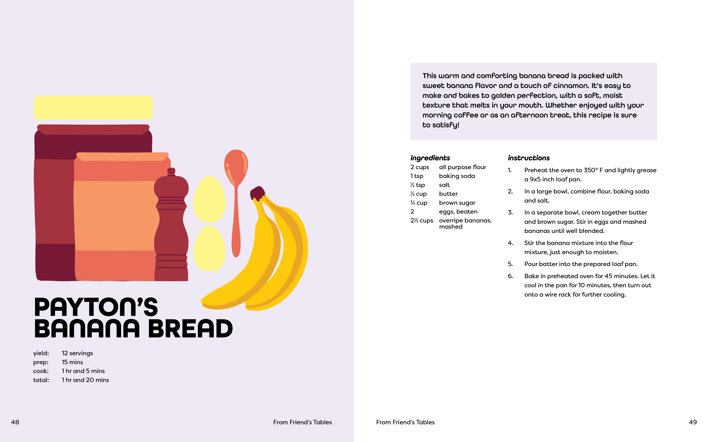
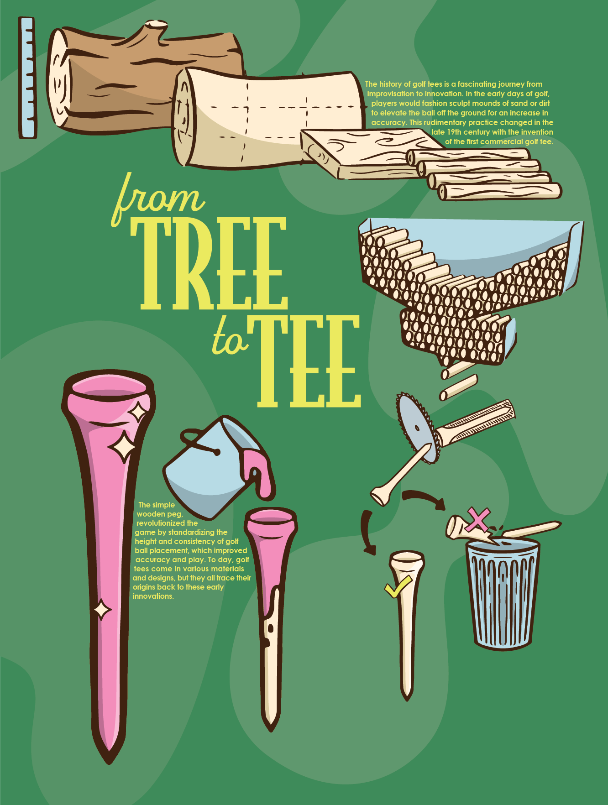

The Data Visualization Book is a collection of information that comes together in displaying the qualities that make up the unique country of Italy. The process began with intensive research in various categories like history, geography, and economy. I chose to use a vibrant color palatte to portray the country’s bold culture and traditions. The simple illustrations and decorative typeface come together in a visually appealing balance.

For our first typography project, we were tasked with creating a cookbook. From creating a grid, developing a theme, and applying visual elements, the cookbook was a thourough project aimed at enhancing skills in publication design. I challenged myself to illustrate each of the ingredients and finished dishes to use as imagery throughout the book. In the end, I created a 54 page book utilizing recipes from those who mean the most to me
The Zine of Resistance is a continuation of the Icons of Resistance and serves as a call to action against fast fashion. The zine allowed for further explanation of the icons in which we previously created and more information on the harmful effects of fast fashion. When unfolded, the back reveals a poster inspired by the tedious process of quilting. A quilt served as my inspiration due to its direct juxtaposition the fast and cheap nature of fast fashion.
_Artboard 4-01.png)
-02.png)
For the Family Grid, we were tasked with expressing the personalities of family or friends with typographic compositions. We experimented with grid systems that were utilized throughout the project and built unique compositions for each individual using content we developed. We continued our journey with hierarchy and practiced basic typesetting to create a sense of uniformity throughout the final piece. One of the most important things we focused on was spacing and carefully choosing a typeface that prioritizes readability.


For the Process Poster, we were asked to choose an item and conduct research into how it is made. I chose a golf tee due to its seemingly simple qualities. Throughout this process, I experimented with Mid-Century design styles which were brought in with the typography and illustration.
